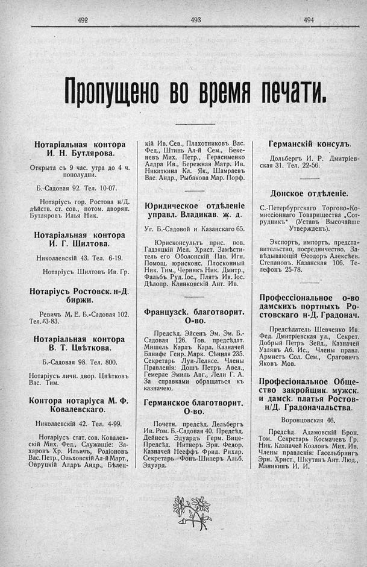

Лист источника 296
Скан

Распознанный текст
492
493
494
Пропущено во время печати.
Нотаріальная контора
И. Н. Бутлярова.
Открыта съ 9 час. утра до 4 ч.
пополудни.
Б.-Садовая 92. Тел. 10-07.
Нотаріусъ гор. Ростова н/Д.
дѣйств. ст. сов., потом. дворян.
Бутляровъ Илья Ник.
Нотаріальная контора
И. Г. Шилтова.
Николаевскій 43. Тел. 6-19.
Нотаріусъ Шилтовъ Ив. Гр.
Нотаріусъ Ростовск. н-Д.
биржи.
Ревичъ М. Е. Б.-Садовая 102.
Тел. 3-83.
Нотаріальная контора
В. Т. Цвѣткова.
Б.-Садовая 98. Тел. 800.
Нотаріусъ личн. двор. Цвѣтковъ
Вас. Тим.
Контора нотаріуса М. Ф.
Ковалевскаго.
Николаевскій 42. Тел. 4-99.
Нотаріусъ стат. сов. Ковалев-
скій Мих. Фед., Служащіе: За-
харовъ Хр. Ильичъ, Родіоновъ
Вас. Петр., Ольховскій Ал-й Март.,
Овруцкій Алдръ Андр., Бѣлец-
кій Ив. Сев., Плахотниковъ Вас.
Фед., Штинь Ал-й Сем., Беке-
невъ Мих. Петр., Герасименко
Алдра Ив., Бережная Матр. Ив.
Никиткина Кл. Як., Шамраевъ
Вас. Андр., Рыбакова Мар. Порф.
Юридическое отдѣленіе
управл. Владикав. ж. д.
Уг. Б.-Садовой и Казанскаго 65.
Юрисконсультъ прис. пов.
Гадзяцкій Мел. Христ. Замѣсти-
тель его Оболонскій Пав. Игн.
Помощ. юрисконс. Плосконный
Ник. Тим., Чернякъ Ник. Дмитр.,
Фальбъ Руд. Іос., Плять Ив. Іос.
Дѣлопр. Клинковскій Ант. Ив.
Французск. благотворит.
О-во.
Предсѣд. Эйсенъ Эм. Эм. Б.-
Садовая 126. Тов. предсѣдат.
Мишель Карлъ Карл. Казначей
Банифе Генр. Марк. Сѣнная 235.
Секретарь Луи-Лелясе. Члены
Правленія: Дошъ Петръ Авел.,
Гемерле Эмиль Авг., Лели Г. А.
За справками обращаться къ
казначею.
Германское благотворит.
О-во.
Почетн. предсѣд. Дельбергъ
Ив. Ром. Б.-Садовая 40. Предсѣд.
Дейнесъ Эдуардъ Герм. Вице-
Предсѣд. Нитнеръ Эрн. Федор.
Казначей Нееффъ Фрид. Рихар.
Секретарь Фонъ-Шиперъ Альб.
Эдуард.
Германскій консулъ.
Дольбергъ И. Р. Дмитріев-
ская 31. Тел. 22-56.
Донское отдѣленіе.
С.-Петербургскаго Торгово-Ко-
миссіоннаго Товарищества „Сот-
рудникъ“ (Уставъ Высочайше
Утвержденъ).
Экспортъ, импортъ, предста-
вительство, посредничество. За-
вѣдывающій Ѳеодоръ Алексѣев.
Степановъ. Казанская 106. Те-
лефонъ 25-78.
Профессіональное о-во
дамскихъ портныхъ Ро-
стовскаго н-Д. Градонач.
Предсѣдатель Шевченко Ив.
Фед. Дмитріевская ул., Секрет.
Добрый Петръ Зейд., Казначей
Узлянъ Аб. Ис., Члены правл.
Армистъ Сол. Сем., Сраговичъ
Яковъ Мов.
Професіональное Обще-
ство закройщик. мужск.
и дамск. платья Ростов-
н/Д. Градоначальства.
Воронцовская 46.
Предсѣд. Адамовскій Брон.
Том. Секретарь Космачевъ Гр.
Ник. Казначей Козловъ Мих. Ив.
Члены правленія: Гасельбрингъ
Эрн. Христ., Шкутанъ Ант. Люд.,
Маникинъ И. И.